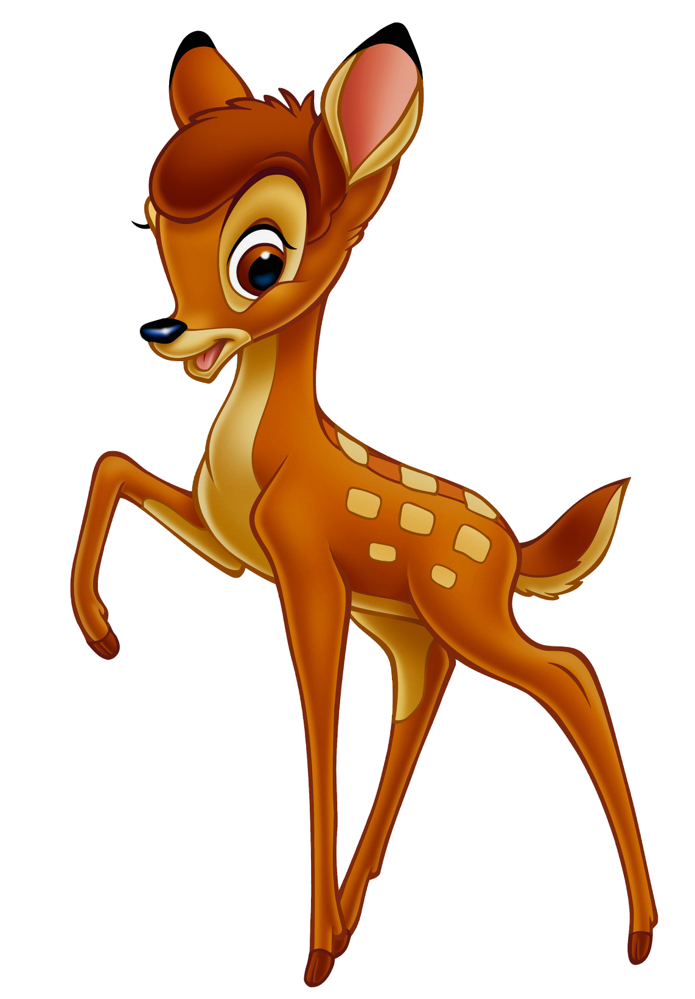
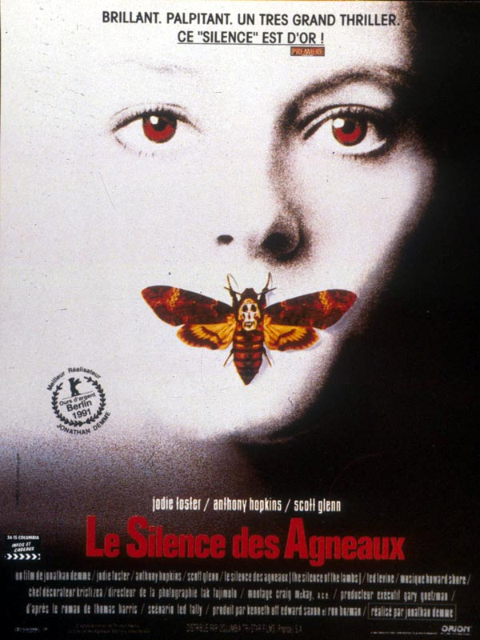

After beeing great, i want to be great again.
|  |
BambiLe jeune faon Bambi, après la mort de sa mère tuée par un chasseur, doit apprendre à survivre seul dans la forêt. Il trouve bientôt un jeune compagnon, le lapin Panpan, aussi malicieux et débrouillard que Bambi est maladroit et pataud. BA Critiques |
|  |
Le Silence des AgneauxUn psychopathe connu sous le nom de Buffalo Bill sème la terreur dans le Middle West en kidnappant et en assassinant de jeunes femmes. Clarice Starling, une jeune agent du FBI, est chargée d'interroger l'ex-psychiatre Hannibal Lecter. Psychopathe redoutablement intelligent et porté sur le cannibalisme, Lecter est capable de lui fournir des informations concernant Buffalo Bill ainsi que son portrait psychologique. Mais il n'accepte de l'aider qu'en échange d'informations sur la vie privée de la jeune femme. Entre eux s'établit un lien de fascination et de répulsion. BA Critiques VOD Achat |
Alice au pays des merveillesAlors qu'elle travaille à ses leçons, Alice se laisse entrainer par le sommeil et tombe dans une profonde rêverie. Poursuivant un lapin très en retard elle accède au pays des merveilles où une suite d'aventures rocambolesques et insolites l'attendent. Tantôt rapetissée, tantôt gigantesque, Alice oscile au gré de ses rencontres entre la quête du merveilleux et l'expérience cauchemardesque. VOD Critiques |